Top Features
Find lap time, improve your technique. Start the walkthrough.
-
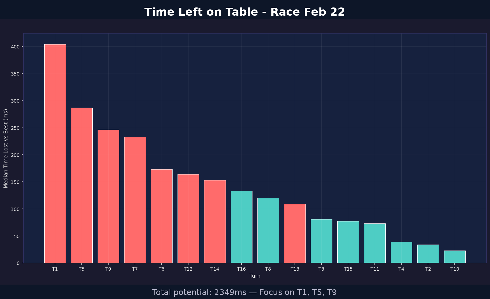
FIND LAP TIME / TURN ANALYSISTime Left on Table
Four steps to faster lap times: get time back right now, find extra pace against a target reference, fix your technique, optimize ERS. First, time back now: execute closer to your best, consistently, in the top three turns/corners or complexes named here.
-
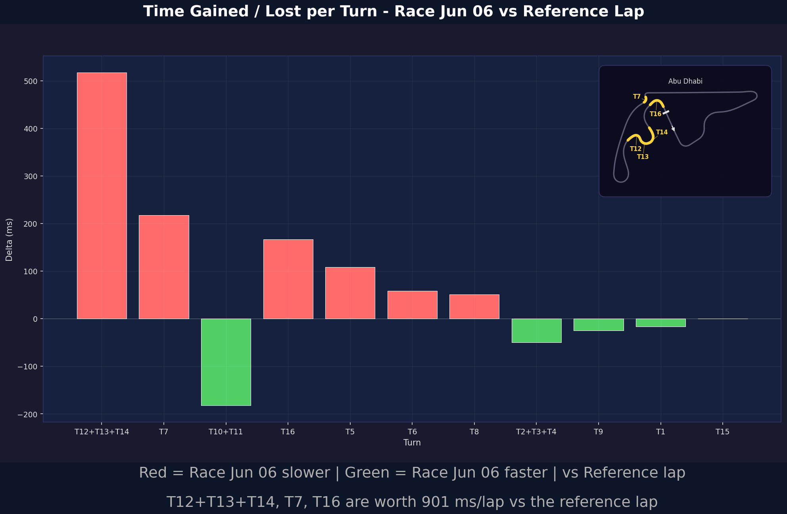
FIND MORE PACE / TURN ANALYSISTime Gained / Lost per Turn vs Reference
Then, find more pace: turn by turn against the track’s built-in reference. Red is where you’re slower, green is where you’re faster. Focus on the named corners that are worth the most.
-
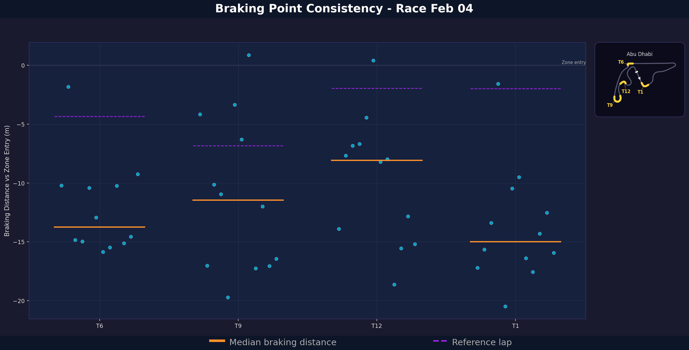
TECHNIQUE / CONSISTENCYBraking Consistency
Your braking point at every priority corner, lap by lap, comparing your median (in orange) to the reference (dashed purple). A wide spread away from the reference means you’re leaving lap time on the table.
-
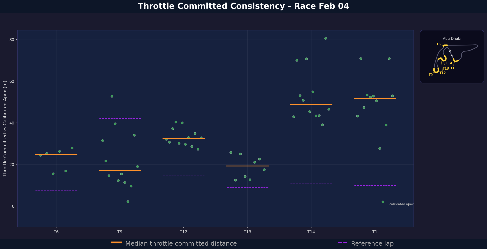
TECHNIQUE / CONSISTENCYThrottle Consistency
Where you commit to throttle on exit, lap by lap. The purple dash is the reference. Late or scattered commitment is exit speed left on the table.
-
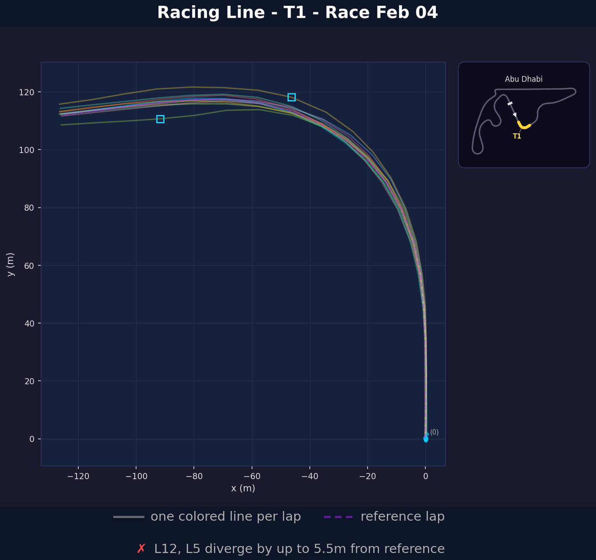
TECHNIQUE / RACING LINERacing Line - T1
Then, fix the technique, starting with racing lines. One line per lap for highest-yield corners, vs the purple dashed reference. The footnote names divergences worth correcting.
-
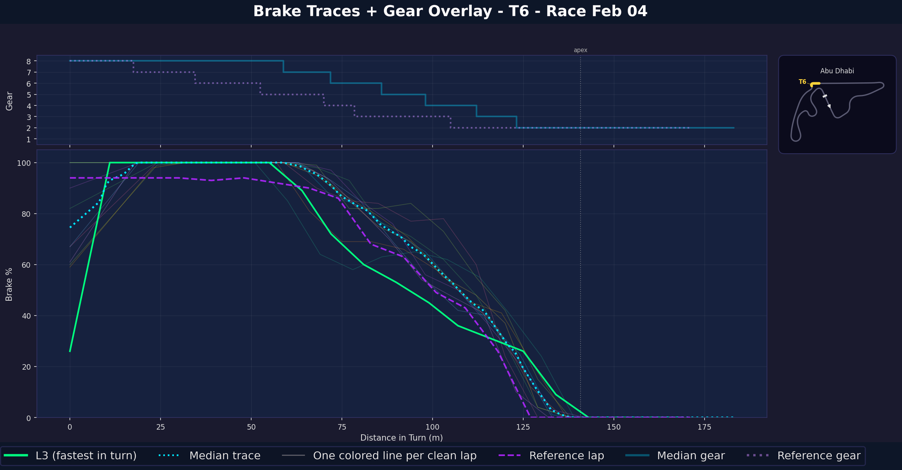
TECHNIQUE / TRAIL BRAKINGBrake Traces & Gear Overlay - T6
Brake pressure, pedal release, and gear downshifts through a specific turn/corner. Highest-yield turns are detected automatically. The fastest lap is highlighted vs the dashed purple reference. See whether you're correctly trail braking to the apex.
-
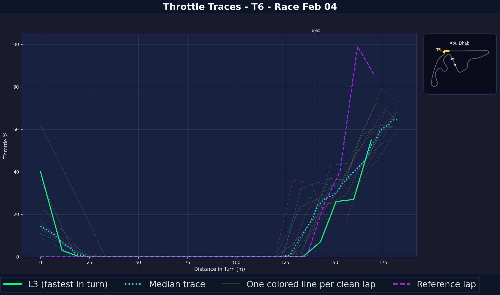
TECHNIQUE / THROTTLE APPLICATIONThrottle Traces - T6
Throttle application and modulation past the apex of a specific turn/corner. Highest-yield turns are detected automatically. The fastest lap is highlighted vs the dashed purple reference. See whether you're getting back on throttle early enough.
-
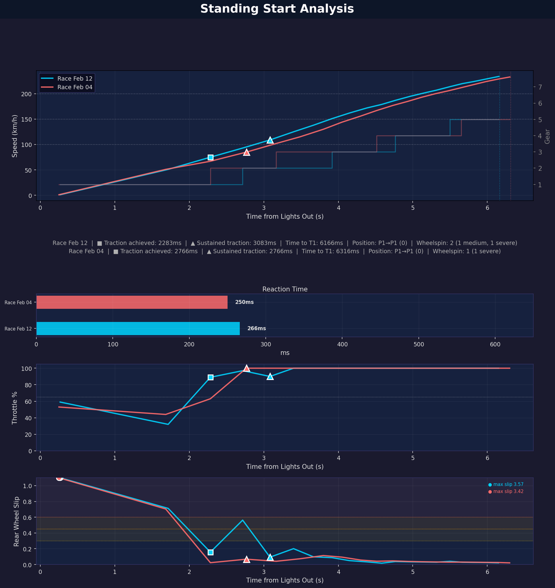
TECHNIQUE / RACE STARTStanding Start Analysis at Lights Out
Reaction time, traction, throttle application and wheel spin off the line, two races side by side, plus places gained or lost into Turn 1.
-
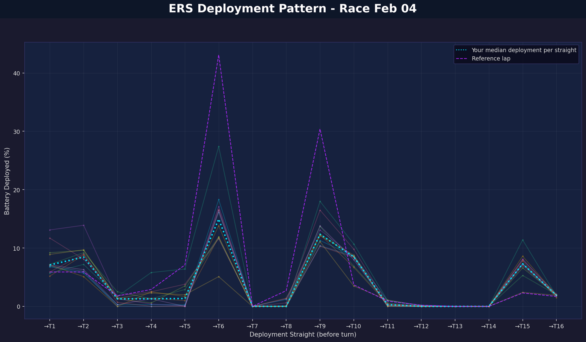
ENERGY / ERS MANAGEMENTERS Deployment Pattern
Finally, optimize ERS. How much battery you deploy on the run to each corner, lap by lap, against the reference pattern (dashed purple). The straights where the reference spends more are the straights where you leave time on the table.
-
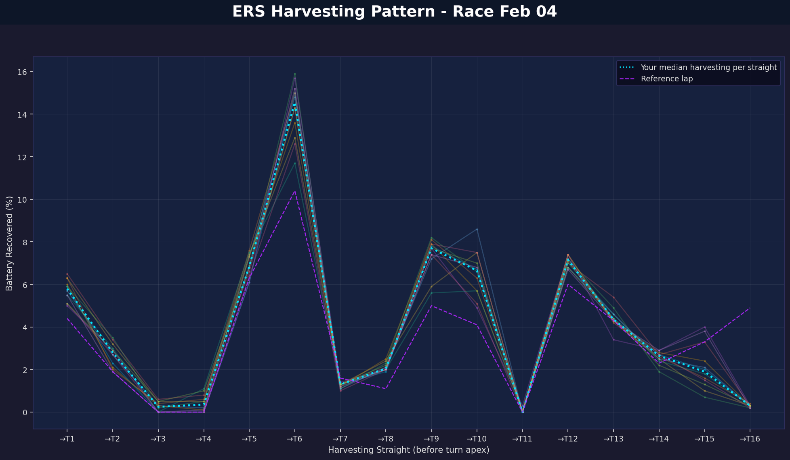
ENERGY / ERS MANAGEMENTERS Harvesting Pattern
The other half of ERS: battery recovered into each corner, lap by lap, against the reference (dashed purple). Over-harvesting where the reference does not is speed scrubbed on entry.
-
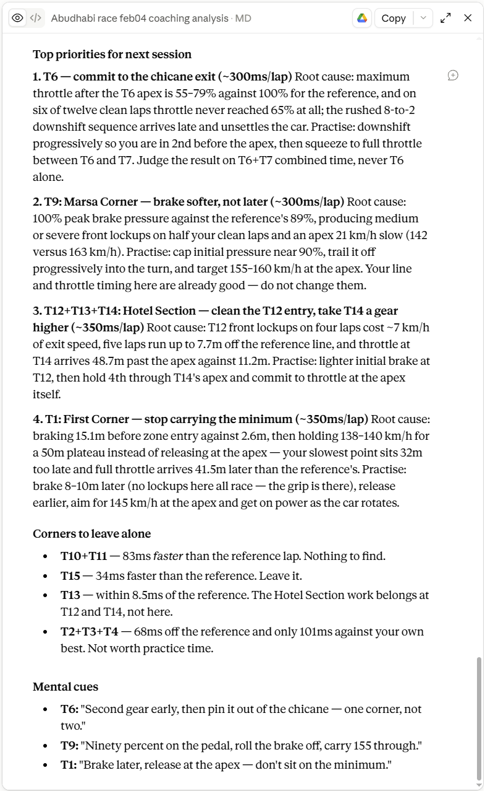
EXTERNAL AI COACHINGExternal AI Coaching (Optional)
The built-in chart analysis already tells you exactly what to fix and where to find pace. But for a plain-English debrief in the style of a Race Engineer, drag and drop the analysis ZIP into your preferred external LLM, or open your browser-based AI/LLM straight from the app’s menu.
-
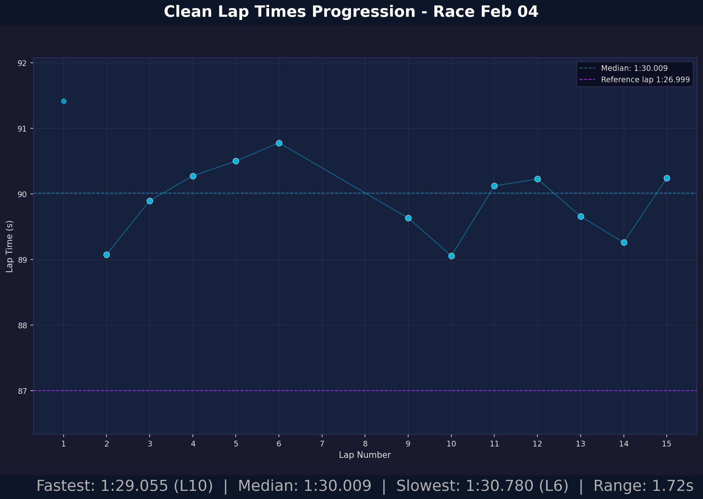
RACE PACELap Times Progression
Every clean lap in order, with median vs the reference. Outlier laps are detected and annotated.
-
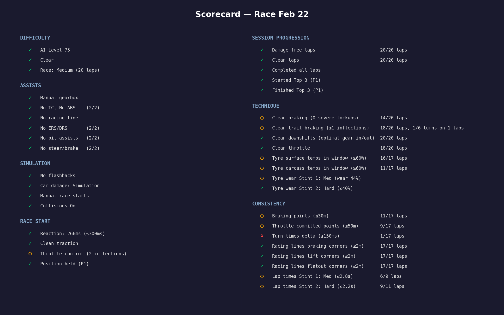
SESSION OVERVIEWSession Scorecard
The whole session on one card: context, race start, technique scores, consistency scores, plus the two biggest opportunities (identified per turn/corner) to gain lap time or find extra pace right now.
-
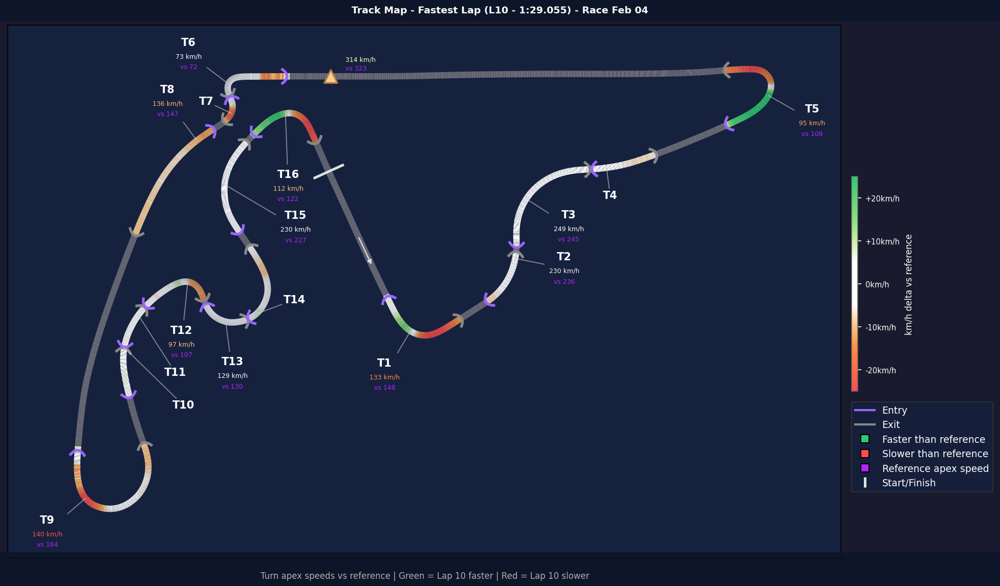
TRACK MAPLap Heat Map vs Reference
Your fastest lap drawn on the circuit, comparing speed deltas vs. the reference through each turn. For example: T5 is faster in, slower out; the reverse should be true. Shows where to find more speed next, at a glance.
-
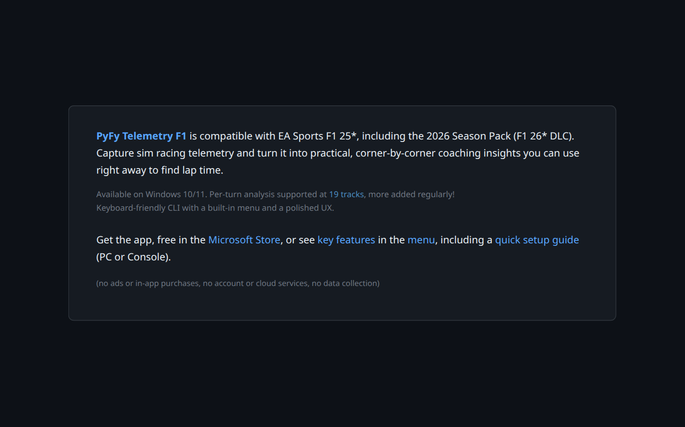
WELCOMEPyFy Telemetry: F1 Performance Analysis
Capture sim racing telemetry and turn it into practical, turn-by-turn/corner-by-corner insights you can use right away to gain lap time.